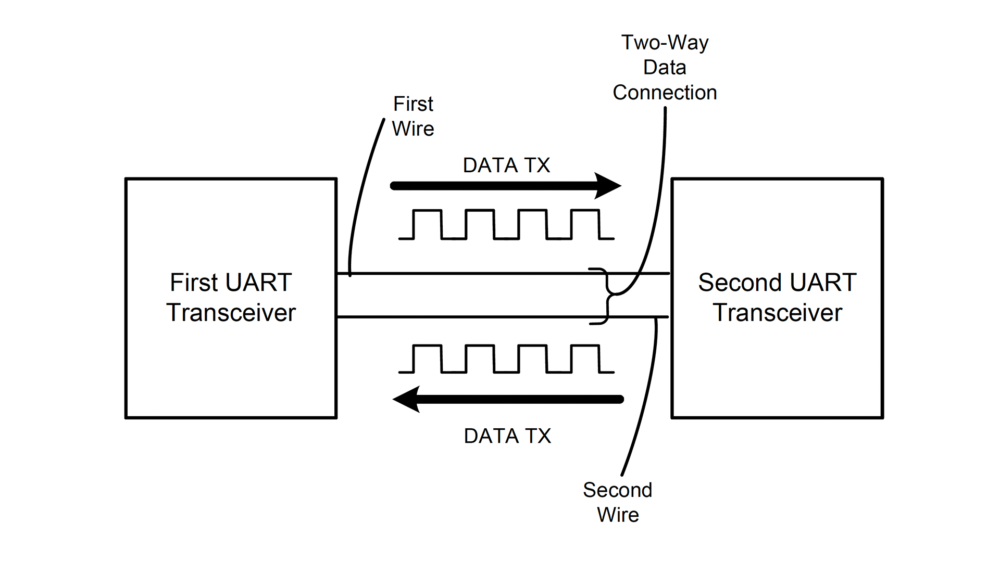

01 / Power electronics
300 W Pure Sine Wave Inverter
Designed the push-pull converter, transformer interface, schematic, and PCB routing for a 12 V to 400 V power stage.
- 12 V input
- 300 W target
- Power PCB
Electronic & Telecommunication Engineering
I’m Deelaka Jerome de Mel, an undergraduate at the University of Moratuwa working across power electronics, PCB design, FPGA systems, and analog circuits.
01 / Selected work
Each project is grounded in a specific engineering problem, with an emphasis on the decisions and implementation work I owned.
01 / Power electronics
Designed the push-pull converter, transformer interface, schematic, and PCB routing for a 12 V to 400 V power stage.

02 / Power electronics
Built and analysed the gate-driver and half-bridge stage, with attention to switching behaviour and output filtering.

03 / Digital design
Implemented a complete UART transceiver from scratch in Verilog using discrete FSM logic, then deployed it on a Cyclone IV E FPGA.
More work
Analog Solar Tracker Discrete analog control and PCB implementation → Smart Bus Ticketing System Role-based Java and REST platform ↗02 / PCB design
I treat board design as an electrical constraint—not a final drafting step. These layouts focus on current paths, switching loops, component placement, and practical routing.
Power-stage placement and routing for high-voltage conversion.
Discrete analog-control board implementation.
Switching power stage and gate-driver architecture.
3D PCB design for an automated plant-monitoring system.